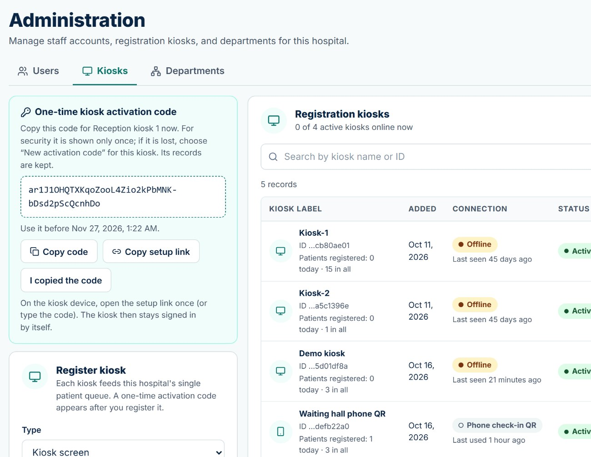
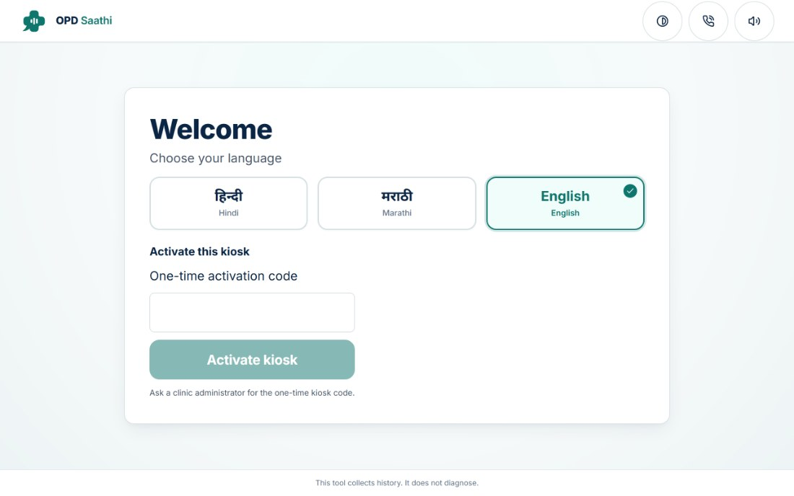
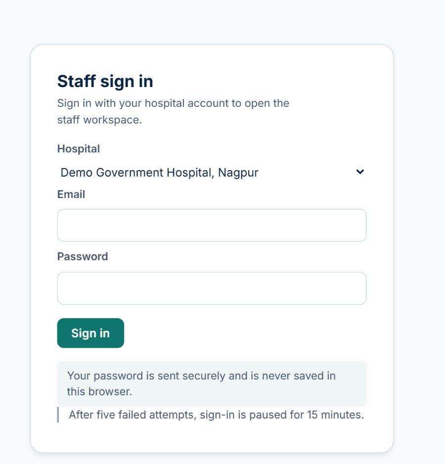
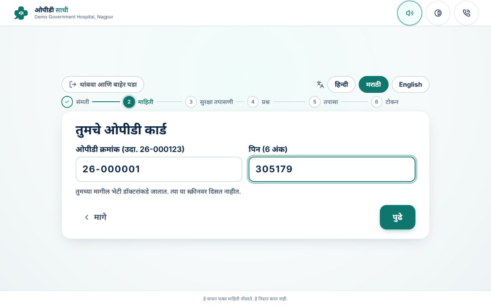
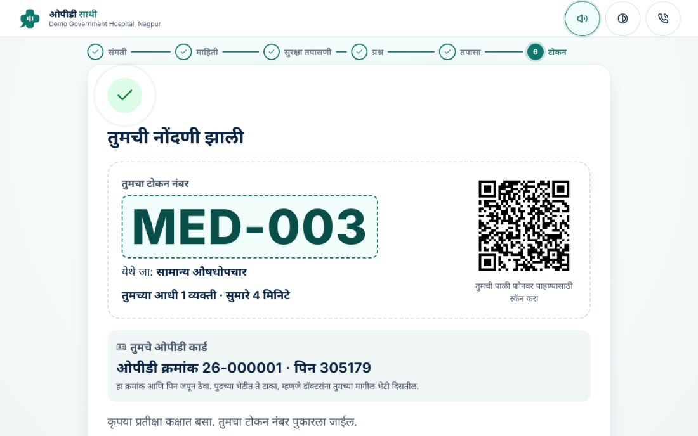

Start it, move to a new network, install it on another laptop, pair a kiosk, and take the first patient. Fictional patients only.
| I want to | Go to |
|---|---|
| Start it on my own laptop, everything closed | A, page 2 |
| Use it on a new Wi-Fi, or after a restart | B, page 2 |
| Install it on another laptop from the repository | C, page 3 |
| Use a separate tablet or PC as the kiosk | D, page 4 |
| Be ready for the first patient | E, page 5 |
| Find a command, or fix a problem | F, page 6 |
| Who | Address |
|---|---|
| Patient kiosk | http://localhost:8080/kiosk |
| Staff (nurse, doctor, admin) | http://localhost:8080/staff |
| Patient's phone: check-in | http://<PC address>:8080/m/… (a QR) |
| Patient's phone: place in queue | http://<PC address>:8080/s/… (the token's QR) |
| Thing | Why |
|---|---|
| Windows 10 or 11, 8 GB RAM or more | The whole system runs on this one laptop. Close other heavy programs. |
| Docker Desktop, showing “Engine running” | It runs the database, the server and the web app. |
| Chrome or Edge | Voice needs one of these two. |
| Git | Only to copy the repository to a new laptop. |
| Internet | For the first build, and for AI and natural voices. Everything else works without it. |
| One Wi-Fi for laptop, phones and kiosks | Phones and other devices reach the laptop over it. |
start-demo.ps1).# 1. Start Docker Desktop and wait for "Engine running". Then, in PowerShell: cd C:\Users\lenovo\Downloads\OPD-Sathi Set-ExecutionPolicy Bypass -Scope Process # allows scripts in this window only .\start-demo.ps1 -WebPort 8080 # starts everything; prints the links and logins .\scripts\demo-check.ps1 # every line should say [ok]
OPD Saathi collects a patient's history and runs the queue. It does not diagnose. This guide is for the demo installation; installing at a real hospital is in docs/DEPLOYMENT.md (and the box on page 3).
cd C:\Users\lenovo\Downloads\OPD-Sathi
Set-ExecutionPolicy Bypass -Scope Process .\start-demo.ps1 -WebPort 8080After code changes it rebuilds (a few minutes). If nothing changed, add
-NoBuild and it starts in seconds..\scripts\demo-check.ps1Every line should say
[ok]. A [warn] on AI means Gemini is busy or there is no internet: the demo still runs, without AI./staff signed in as the nurse and the doctor.OPD Saathi is running. Patient kiosk (open once to activate): http://localhost:8080/kiosk?activate=… Staff workspace: http://localhost:8080/staff Admin: admin@demo.opdsathi.test / (password) Doctors (password …), one per department: doctor01 General Medicine | doctor02 … Nurses (password …): nurse01 ... nurse05@demo.opdsathi.test Returning patient for the demo: OPD number 26-000001, PIN ……; 52, female Token QR codes open on phones via http://<PC address>:8080 Patients' own phones check in at: http://<PC address>:8080/m/… AI: Gemini key found - … are ON.
.env file (DEMO_ADMIN_PASSWORD, DEMO_STAFF_PASSWORD). Never share or commit that file.To stop: docker compose down. Patients and settings are kept.
Phones and other devices use the laptop's current address. On a new network the old QR codes point nowhere, so the script must run again there.
.\start-demo.ps1 -WebPort 8080 -NoBuild
.\scripts\lan-check.ps1
{"status":"ready"}:
http://<PC address>:8080/api/readyz
| If the phone cannot connect | Do this |
|---|---|
| The laptop passes every check, the phone times out | Campus and guest Wi-Fi keep devices apart. Use a phone hotspot that the laptop and the phones all join. |
| Windows calls the network Public | Set it to Private (Settings → Network), or in an Administrator PowerShell: .\scripts\lan-check.ps1 -AddFirewallRule. Remove it later with -RemoveFirewallRule. |
| The QR opens a page that loads for ever | The QR holds an old address: run the start script again. |
| Speaking does not work on the phone | Expected: browsers allow the microphone only on HTTPS or on the laptop itself. Phones tap and type. |
git clone https://github.com/Shashi1543-07/OPD-Sathi.git cd OPD-Sathi
Set-ExecutionPolicy Bypass -Scope Process .\start-demo.ps1 -WebPort 8080The first run needs internet and takes several minutes: it builds the programs.
.env in Notepad, fill in the two keys, save, and run the start script again.
GEMINI_API_KEY=your key from aistudio.google.com/apikey SARVAM_API_KEY=your key from dashboard.sarvam.ai
.\scripts\demo-check.ps1.env with fresh random secrets and passwords.| Question | Answer |
|---|---|
| Windows: allow Docker through the firewall? | Allow, for private networks. |
| Browser, on the kiosk: use the microphone? | Allow. Otherwise patients can only tap and type. |
| Nothing else is typed | The demo hospital and its logins are made for you. |
.env into the new folder before the first run, by USB, never by chat or e-mail. Patients and history do not move with it.
powershell -ExecutionPolicy Bypass -File .\setup-hospital.ps1 -WebPort 8080
No demo data. It asks for five things and then prints the addresses:
| It asks | Example |
|---|---|
| Hospital name (shown on its kiosks) | District Hospital, Wardha |
| Short unique hospital code | dh-wardha |
| Administrator's full name, e-mail and password | The password is not shown as you type. |
Then the administrator, at /staff:
A kiosk is any browser that has been paired once with a one-time activation code. Until then it shows “Activate this kiosk” and cannot start a check-in.
Nothing to do: the start script opens the activation link for you. To move the demo kiosk to another browser on this laptop, make a new link and open it once there (the earlier browser is then unpaired):
docker compose run --rm api python -m app.cli demo-kiosk --web-url http://localhost:8080
localhost, put the laptop's address there instead:
http://<PC address>:8080/kiosk?activate=<code>


| On the Kiosks screen | What it does |
|---|---|
| More actions → New activation code | The code was lost, or the kiosk's browser was reset. Its records are kept. |
| Deactivate | The kiosk stops at once; activate it again later. |
| Type: Phone check-in QR | Makes a poster QR instead of a kiosk. Show QR prints it; Replace QR makes old posters stop working. |
| Connection: Online / Offline | A kiosk reports in every minute while its screen is open. |
localhost). A kiosk on another device over plain Wi-Fi works by tapping and typing. For a demo with voice, use the kiosk tab on the laptop.| Check | How |
|---|---|
| 1. Everything is up | .\scripts\demo-check.ps1 shows only [ok]. |
| 2. The kiosk is paired | /kiosk shows Start patient check-in, not “Activate this kiosk”. |
| 3. Staff are signed in | Nurse on Queue, doctor on Consultations. One browser holds one staff sign-in for all its tabs: use Edge beside Chrome, or a private window, for the second role. The kiosk tab can share a browser with either. |
| 4. Phones reach the laptop | .\scripts\lan-check.ps1, and the test link opens on a phone. |
| 5. The check-in QR is on the wall | Settings → Kiosks → Waiting hall phone QR → More actions → Show QR → Print. |
| 6. The returning patient is fresh | Her OPD number and PIN are in the start script's output. |
| 7. Sound and microphone | Volume up; allow the microphone when the kiosk asks. |

/staff: pick the hospital, then e-mail and password. Demo accounts: admin@, doctor01@ … doctor08@, nurse01@ … nurse05@demo.opdsathi.test.

| The patient is asked | Good to know |
|---|---|
| Language, then consent | Without consent there is no check-in: staff help at the desk. |
| AI help: yes or no | Optional. “No” still gives a token. |
| Age and sex; phone number optional | No name at the kiosk. |
| OPD card, if she has one | Age and sex must match the card. |
| Danger signs, then about a dozen questions | A danger sign alerts the nurse at once. |
# Start each run-through with a clean returning patient docker compose run --rm api python -m app.cli seed-demo-returning --reset # A lost OPD card: Staff → Patients → find her → new PIN
| I want to | Command (PowerShell, in the project folder) |
|---|---|
| Start everything | .\start-demo.ps1 -WebPort 8080 |
| Start fast, nothing changed | .\start-demo.ps1 -WebPort 8080 -NoBuild |
| Is everything ready? | .\scripts\demo-check.ps1 |
| Can phones reach this laptop? | .\scripts\lan-check.ps1 |
| Stop (data is kept) | docker compose down |
| Watch the server for errors | docker compose logs -f api (worker for the background jobs; Ctrl+C to leave) |
| A new kiosk activation link | docker compose run --rm api python -m app.cli demo-kiosk --web-url http://localhost:8080 |
| The phone check-in link again | docker compose run --rm api python -m app.cli demo-checkin --web-url http://<PC address>:8080 |
| Reset the returning patient | docker compose run --rm api python -m app.cli seed-demo-returning --reset |
| Do AI and voice answer right now? | docker compose run --rm api python -m app.cli ai-check |
| Five sample patients in today's queue | docker compose run --rm api python -m app.cli seed-demo-data (remove: clear-demo-data) |
| Take the latest code | git pull then .\start-demo.ps1 -WebPort 8080 (it rebuilds) |
docker compose down -v. The -v deletes the database: every patient, login and kiosk pairing. Plain docker compose down keeps them.| What you see | What to do |
|---|---|
| “running scripts is disabled on this system” | Run Set-ExecutionPolicy Bypass -Scope Process first, in the same window. |
| “Docker Desktop is not running” / cannot connect to the Docker daemon | Start Docker Desktop, wait for “Engine running”, run the script again. |
| The kiosk says Activate this kiosk | This browser is not paired (another browser, another port, or cleared data). Make a new link (table above) and open it once here. |
| The page looks old after an update | Reload it once. From then on open pages update themselves. |
| The page does not load | Wait 20 seconds and reload. Then docker compose ps: every line should say Up. If not, run the start script again. |
[warn] AI: Gemini did not answer | No internet, or the free AI service is busy. Try ai-check again in a minute. Meanwhile choose No, continue without AI at the kiosk. |
| The voice answer is not heard | Allow the microphone (the icon in the address bar), or tap Type instead. |
| The doctor's page has no AI brief | It arrives a few seconds after the token; press refresh. If AI was busy, the page still has the history from the question bank. |
| The nurse's tab has turned into the doctor's (or the other way) | One browser holds one staff sign-in. Open the second role in another browser or a private window. |
| The OPD card is refused | Check age 52 and Female, then the number and PIN. Or tap No, or I don't have my card. |
| Forgot the passwords | Run the start script (it prints them), or read DEMO_ADMIN_PASSWORD and DEMO_STAFF_PASSWORD in .env. |
More: docs/DEMO.md (the ten-minute demo script) · docs/MOBILE_LAN.md (phones on Wi-Fi) · docs/DEPLOYMENT.md (a real hospital) · docs/showcase/OPD-Saathi-Showcase.html (the film of the product).